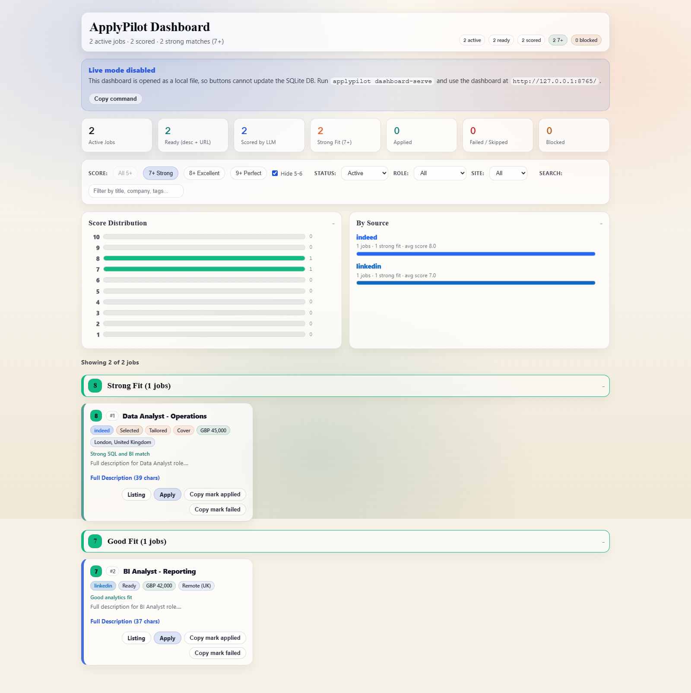
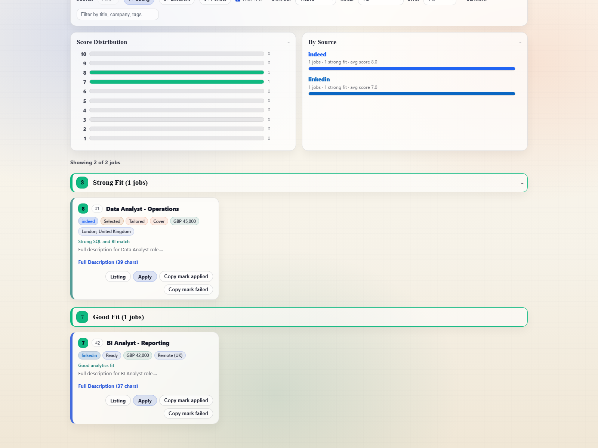

ApplyPilot Training: Click-by-Click
Use this when onboarding new users. Follow each step exactly in dashboard mode.
Start dashboard first:
applypilot dashboard-serve --multi-user or docker compose up --build
Step 1: Open Dashboard and Understand Main Areas
- Open
http://127.0.0.1:8765. - Locate three key areas: job filters, pipeline controls, setup panel.
- Use this screen as the main operating center.

Step 2: Use Pipeline Controls Correctly
- Run stages in order: Discover -> Enrich -> Score.
- Use toggles like Selected only when targeting specific jobs.
- Use Stop if a run is taking too long.

Step 3: Manage Jobs from Card Actions
- Click Pick on high-fit jobs you want to tailor/apply first.
- Use Applied, Failed, Block as needed.
- Avoid deleting jobs unless they are clearly irrelevant.

Step 4: Complete Full Profile Editor (Required)
- Open Setup -> Full Profile Editor.
- Fill all critical fields: name/email, work authorization, compensation, experience.
- Click Save full profile.

Step 5: Configure Tailoring Intelligence
- Keep Role Pack on Auto unless you are role-specific.
- Use Resume Template Builder to add skills, certifications, education, metrics.
- Click Save tailoring config after changes.

Step 6: Build Search Config
- Use builder mode for non-technical users.
- Set countries/locations/roles/results thoughtfully.
- Save
searches.yamland run Discover again.

Step 7: Tailor Only Selected Jobs (Best Practice)
- Pick jobs first.
- Tick Selected only in pipeline controls.
- Run Tailor or click Regenerate tailored resumes now.
This prevents wasting tokens on low-priority jobs and improves output quality.
Step 8: Final QA Before Applying
- Open tailored resume and cover letter artifacts for top jobs.
- Check factual accuracy (companies, dates, metrics).
- Run apply stage (dry-run first if needed).
Trainer Checklist
- User has unique account (multi-user mode) and isolated workspace.
- User has
GEMINI_API_KEYin their own workspace.env. - Profile, resume text, and searches are saved successfully.
- User can run discover/enrich/score and tailor selected jobs.
- User understands Applied/Failed/Block lifecycle actions.
Training complete.